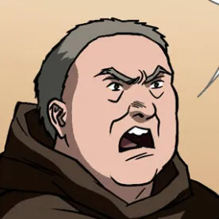
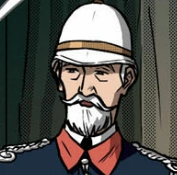
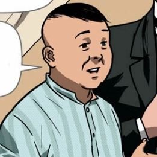
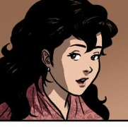
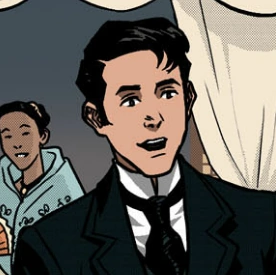

| Image of Character | Name of Character | Description of Character | ||||||||
|---|---|---|---|---|---|---|---|---|---|---|
|  | Father Damaso | He is a spanish friar living in the Philippines. Father Dámaso is an arrogant and pedantic priest who, despite having lived amongst Filipinos and hearing their confessions, is barely able to speak or understand Tagalog. He is also a shameless loudmouth and he is unafraid of slandering nonreligious citizens who he thinks undermine his power. | ||||||||
|  | Tenyente Guevarra | He is an elderly lieutenant of the Civil Guard who deeply respects both Ibarra and the late Don Rafael. He also went against the church and Father Dámaso’s opressive dominance. He is also the one to inform Ibarra about what exactly happened between Don Rafael and Father Dámaso | ||||||||
|  | Kapitan Tiago | A Filipino socialite and well-respected member of the country's wealthy elite. He is close with high-ranking clergy members like Father Salvi and Father Dámaso, Kapitan Tiago is also one of the richest property owners in Manila and San Diego. He has a daughter named Maria Clara and he wants her to marry an affluent man with ample social capital. | ||||||||
|  | Maria Clara | She is a woman of well-regard in San Diego for her high social station. Having grown up together as childhood friends, Maria Clara and Ibarra are enganged to bed married. Though Father Dámaso, her godfather, is displeased with this arrangement and does what he can do to interfere. When Ibarra is excommunicated after almost killing Dámaso at a dinner party, arrangeents are made for Maria Clara to marry a young Spanish man named Linares. | ||||||||
|  | Juan Crisóstomo Ibarra y Magsalin | Ibarra is a wealthy young man of mixed Spanish and Filipino ancestry who has recently returned to the Philippines from Europe after spending seven years studying abroad. Ibarra is cultured and well-respected, though the friars in his hometown of San Diego are suspicious of him. This is because his father Don Rafael was recently imprisoned and labeled a subversove and heretic, a sentence that eventually led to his demise in jail. | ||||||||